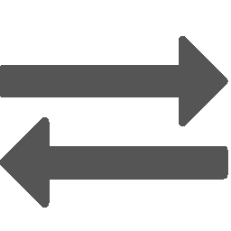

Scene Management¶
The graphics window is the main window in SScanSS-2 and is essential for visualizing many operations. The graphics window will render one of two scenes: the first showing the sample preparation and the second the instrument.
Toggle scene¶
SScanSS-2 will switch to the most appropriate scene for the current operation. To switch between scenes manually use the shortcut Ctrl + T or click the  button in the toolbar
{kind=link}
Navigation¶
Scene navigation does not move the sample but rather the camera viewing the sample. Navigating in the 3D space is done with the use of both mouse movement and keyboard shortcuts. The following shortcuts are useful for navigating the scene:
| Shortcut | Action |
|---|---|
| Left Mouse Click | Rotate View |
| Right Mouse Click | Pan or Move View |
| Mouse Scroll Wheel | Zoom in or out View |
| Ctrl + 0 | Reset Camera View |
| Ctrl + 1 | Camera View +X Axis |
| Ctrl + 2 | Camera View -X Axis |
| Ctrl + 3 | Camera View +Y Axis |
| Ctrl + 4 | Camera View +Y Axis |
| Ctrl + 5 | Camera View +Z Axis |
| Ctrl + 6 | Camera View +Z Axis |
The  toolbar menu can also be used to quickly switch between camera views.
toolbar menu can also be used to quickly switch between camera views.
Change sample appearance¶
The sample shading can be changed from
- View > Solid
- View > Wireframe
- View > Transparent
Note
This action is global i.e. it is applied in all scenes so the sample will always be rendered using the active shading style irrespective of the scene or the operation.
Hide and show items¶
The 3D models representing the fiducials, measurements, vectors and the coordinate frame can be hidden or shown by
clicking the appropriate toggle in the View menu or the  toolbar menu. This could useful when the scene is
cluttered by too many items. This action is also global so hiding fiducials in the sample scene will hide them in
the instrument scene.
toolbar menu. This could useful when the scene is
cluttered by too many items. This action is also global so hiding fiducials in the sample scene will hide them in
the instrument scene.